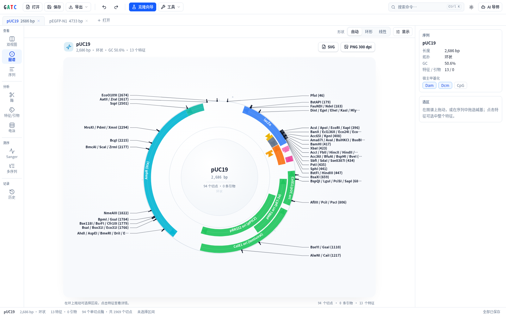

质粒图谱 · 酶切分析 · 引物设计 · 克隆模拟 · 虚拟电泳。
直接读写 SnapGene 的 .dna 文件，数据留在本机，免费且源码开放。
SnapGene 是 Dotmatics 的商标；GATC 为独立项目，与其无关联。

Plasmid maps, restriction analysis, primer design, cloning simulation, virtual gels.
Reads and writes SnapGene .dna files — your data stays on your machine.
SnapGene is a trademark of Dotmatics. GATC is an independent project, not affiliated with them.
开源的 SnapGene 替代品
直接读写 .dna 文件。
图谱、酶切、引物、克隆模拟、虚拟电泳，全部本机运行。
SnapGene 是 Dotmatics 的商标；GATC 为独立项目，与其无关联。